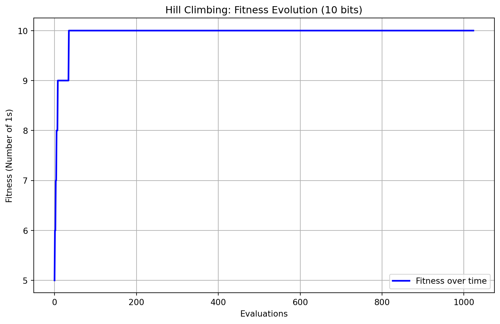
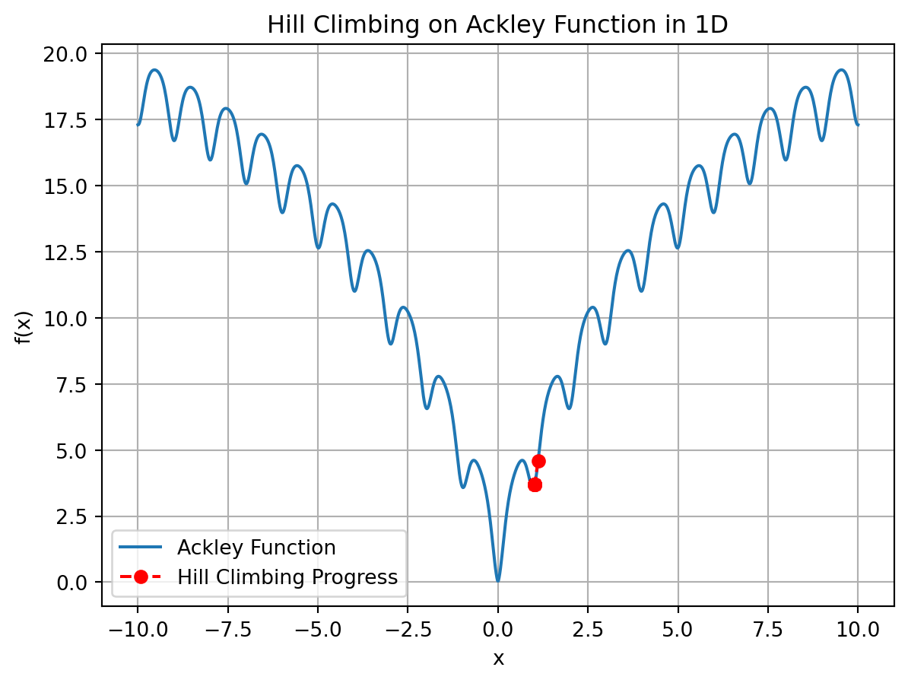

import numpy as np
import time
import matplotlib.pyplot as pltHill Climbing
Hill Climbing (HC)
- Hill Climbing is an optimization algorithm that starts with an arbitrary solution to a problem and iteratively makes small changes to the solution, choosing the change that improves the solution the most.
- Characteristics
- Greedy Approach: It selects the most promising neighboring solution based on the heuristic, or it uses a search strategy that is to accept only a better solution as the next solution.
- Local Search: Only considers the local neighborhood of the current solution. This implies that if there are local optima located between the initial solution and the optimal solution, HC may get stuck at a local optimum.
- Termination: Ends when no further improvements can be made.
- Applications: Used in various fields like AI for game playing, pathfinding, and scheduling problems.
Search Strategy of HC >
- The search strategy of HC that accepts only a better solution as the next solution.
- Suppose HC has a 50/50 chance to move either left or right in solving the one-max problem; then, in addition to the global optimum (1111), HC may end up in one of the seven or three local optima. \(f(v)>f(s)\).
Search Strategy of HC >=
- The search strategy of HC accepts both better solutions and solutions that are equally good as the next solution.
- The possible result if HC accepts not only a better solution but also a solution that is equally good (i.e., \(f(v)>=f(s)\) as the next solution; then only the solutions \(x_4\) \((0011)\), \(x_8\) \((0111)\), and \(x_12\) \((1011)\) will remain as the local optima, while \(x_16\) \((1111)\) is the global optimum.
Hill Climbing Algorithm
- Start: Initialize with a random solution or a predefined starting point.
- Evaluate: Assess the quality of the current solution using a heuristic function.
- Generate Neighbors: Produce a set of neighboring solutions by making small changes.
- Select Best Neighbor: Choose the neighbor that has the highest heuristic value.
- Move: Replace the current solution with the selected neighbor.
- Repeat: Continue the process until no better neighbors are found or a stopping criterion is met.

Challenges of HC
Local Maximum: Hill climbing may get stuck at a local maximum, where no neighboring solution improves, but better solutions exist further away.
Plateaus: It can struggle on flat regions where no clear direction of improvement is evident.
Ridges: Difficulties in navigating narrow ridges that require moving sideways to find a better peak.
Variations to Overcome Limitations
- Stochastic Hill Climbing: Introduces randomness to avoid local maxima.
- Simulated Annealing: Uses probabilistic decisions to escape local maxima and explore a larger solution space.
- Steepest-Ascent Hill Climbing: Considers all neighbors and selects the one with the steepest ascent.
Program for One Max Implementation
- Import necessary tools: time for timing and matplotlib for plotting results.
- Set num_bits equal to a number (10) in this case.
num_bits = 10 # You can adjust the number of bitsSet up Run Function
- Evaluate the initial solution by counting the number of 1s, which serves as the “fitness” value.
- Search for Neighbors: Generate neighboring solutions by flipping one bit at a time in the current solution. For each neighbor, calculate its fitness (number of 1s in its binary representation).
- Select Best Neighbor: Identify the neighboring solution with the highest fitness.If this neighbor’s fitness is better than the current solution’s fitness, update the current solution to this neighbor.
- Repeat Until Convergence: Continue generating and evaluating neighbors until no neighboring solution improves the current fitness (local maximum reached).Track the fitness of the best solution at each iteration for plotting or analysis.
- Return Best Solution and Fitness Progress: Output the best solution found along with a list of fitness values over iterations.
# Run function for hill climbing
def run_hc(num_bits=10, max_evals=2 ** num_bits):
sol = init_hc(num_bits) # Initialize random solution
fitness = evaluate(sol) # Evaluate the initial solution
fitness_over_time = []
eval_count = 0
# Main loop of evaluations
while eval_count < max_evals:
tmp_sol = transit(sol) # Make a random change (flip a bit)
tmp_fitness = evaluate(tmp_sol) # Evaluate the new solution
sol, fitness = determine(tmp_sol, tmp_fitness, sol, fitness) # Determine if we accept the new solution
fitness_over_time.append(fitness) # Track the fitness over time
eval_count += 1
return fitness_over_time, solHelper Functions:
- Initiate: Set Initial Solution: Randomly choose an initial binary solution of the specified bit length (num_bits).
# Function for initialization (I)
def init_hc(num_bits):
return np.random.randint(2, size=num_bits, dtype=int)- Transit (Generate Neighbors): Create a function that generates all neighbors of a binary solution by flipping each bit one by one.
# Function for transit: (T)
# Flipping a random bit in the solution
def transit(sol):
new_sol = sol.copy()
flip_index = np.random.randint(len(sol))
new_sol[flip_index] = 1 - new_sol[flip_index] # Flip the bit (0 to 1, or 1 to 0)
return new_sol- Evaluate: Count the number of 1s in the binary representation of a solution (fitness value).
# Function for evaluation: (E)
# Sum the number of 1s (OneMax problem)
def evaluate(sol):
return np.sum(sol)- Determine: Track and update the current best solution and its fitness as the search progresses.
# Function for determine: (D)
# Decide whether to accept the new solution
def determine(tmp_sol, tmp_fitness, sol, fitness):
if tmp_fitness > fitness:
return tmp_sol, tmp_fitness # Accept the new solution
return sol, fitness # Keep the current solution- The main execution section initiates the hill climbing algorithm, recording the time taken to execute it. It captures the progression of fitness values over each iteration and identifies the best solution found, while calculating the total execution time.
# Main Execution
# Run hill climbing and get fitness values
start_time = time.time()
fitness_over_time, best_solution = run_hc(num_bits)
end_time = time.time()
execution_time = end_time - start_time # Calculate elapsed time- The output section displays key details about the hill climbing algorithm, including its name, the number of bits used, and the time taken for execution. It then visualizes the fitness evolution across evaluations, providing a clear plot that shows how fitness values change over time as the algorithm progresses toward the best solution.
# Output and visualize
print(f"# Name of the search algorithm: Hill Climbing")
print(f"# number of bits: {num_bits}")
print(f"Time elapsed: {execution_time:.6f} seconds") # Print the elapsed time
# Plot the evolution of fitness over time
plt.figure(figsize=(10, 6))
plt.plot(fitness_over_time, label='Fitness over time', color='blue', linewidth=2)
plt.title(f'Hill Climbing: Fitness Evolution ({num_bits} bits)')
plt.xlabel('Evaluations')
plt.ylabel('Fitness (Number of 1s)')
plt.grid(True)
plt.legend()
plt.show()# Name of the search algorithm: Hill Climbing
# number of bits: 10
Time elapsed: 0.006998 seconds
- In the chart above, the fitness score, which measures the number of 1s in a 10-bit solution, is shown over a series of evaluations. Initially, the fitness rapidly increases, suggesting that the hill climbing algorithm quickly finds improvements in the solution. Once it reaches the maximum fitness of 10, it stabilizes and remains flat, indicating that the algorithm has found an optimal solution and no further improvements are being made.
Comparison of ES and HC for the one-max Problem of size \(n=10\)
- HC-LR and HC-Rand to denote a similar thing. HC-Rand and HC-LR differ primarily in how they choose the next solution and handle exploration, impacting their likelihood of getting stuck in local optima.
- HC-LR (Hill Climbing with Limited Range): HC-LR’s transition operator restricts it to move only to adjacent solutions, which makes it less flexible. The solution v of HC-LR will be the one that is one smaller or one larger than the current solution s (i.e., \(v=s−1\) or \(v=s+1\)). As described in the example, if HC-LR starts with the solution “1000,” it can only move to “0111” or “1001.” If neither of these options provides an improvement, HC-LR is likely to get stuck there, leading to a local optimum. Because HC-LR only accepts moves that improve the solution, it has a high risk of getting trapped in suboptimal points without exploring further.
- HC-Rand (Hill Climbing with Randomization): HC-Rand randomly selects a part of the current solution to invert, allowing it to explore a broader range of possible next solutions. This random approach reduces the chance of getting stuck in a local optimum since the algorithm has the flexibility to try different options, even if they are not immediately better. HC-Rand’s randomness increases the probability of escaping local optima, thus improving the chances of finding a global optimum.
- The solution v of HC-Rand will be created by inverting a randomly chosen subsolution of s (i.e., “1” becomes “0” and “0” becomes “1”). The transition operator in the HC-Rand (Hill Climbing with Randomization) algorithm randomly selects a part (subsolution) of the current solution and inverts the chosen bit(s). For a “one-max problem” of a specific size (where the goal is to maximize the number of 1s in the solution), inverting different bits can produce several possible next solutions.
- In the example given, there are four possible new solutions because there are four different bits that could be inverted from the current solution. If inverting one bit doesn’t improve the objective value (e.g., the number of 1s), HC-Rand will consider other options, allowing it to avoid getting stuck in local optima. This random inversion helps HC-Rand explore other solutions, increasing the chances of finding the global maximum (an optimal solution with the highest number of 1s).
- In both cases, only a better solution will be accepted as the next solution \(v\).
Search strategy
- The Search Strategy of HC-Rand when Starting from the Candidate Solution \(x_9\)
- HC-LR will then move to either \(x_8\) \((0111)\) or \(x_9\) \((1001)\) in this case and eventually get stuck there.
- HC-Rand has a chance to find the global optimum \(x_16\) because the next possible solutions of \(x_13\) \((1100)\) will be \(x_5\) \((0100)\), \(x_9\) \((1000)\), \(x_15\) \((1110)\), and \(x_14\) \((1101)\).
Simulation Results of HC for a Deceptive Problem of size \(n=4\)
The results show that ES is able to find the optimal solution quickly, because only 16 checks (evaluations) are needed, for there are in total 16 candidate solutions in this case.
The results also show that HC-LR is unable to find the optimal solution sometimes when applying it to an optimization problem that has one or more local optima, even if the trap is not that complex.

Simulation Results of HC for a Deceptive Problem of size \(n=10\)
The number of evaluations ES requires to find the optimal solution increases significantly. In this case, ES is unable to find the optimal solution within 1000 evaluations.
It is reasonable to expect that ES will take 1024 evaluations to find the optimal solution because it has to check all possible candidate solutions, and with \(n=10\) there are exactly \(2^n=2^10=1024\) possible candidate solutions.
These results show that both HC-based algorithms are able to find a better result than ES at the early stage of the convergence process. * This implies that HC provides an alternative way to find an approximate solution for large and complex optimization problems.
- The Search Strategy of ES for the BSD-2 Problem of size \(n = 4\)
- Assuming that the starting point is the solution \(x_5\) \((0100)\). The next solution will then be \(x_13\), \(x_1\), \(x_7\), or \(x_6\). This implies that HC-Rand has a good chance to move to a solution in the region \(x_6-x_16\).
- The probability of moving to the left region \(x_1-x_4\) or the right region \(x_6-x_16\) depends somehow on the location of the current solution.
- A move to the right region is a guarantee to find the optimal solution, and a move to the left region is destined to a local optimum in this case.
- The Search Strategy of HC-LR for the BSD-2 Problem of size \(n=4\)
- The search strategy of HC-LR makes it possible to either get stuck at the local optimum \(x_1\) or find the global optimum \(x_16\), depending on the starting point.
- If the starting point is in the range \(x_1-x_4\), HC-LR will certainly end up getting stuck at the local optimum \(x_1\).
- If the starting point is in the range \(x_6-x_16\), HC-LR will surely end up finding the optimal solution.
- If HC-LR starts with the solution \(x_5\), it has a 50/50 chance to get stuck at the local optimum or to find the global optimum.
- The probability for HC-LR to get stuck at the local optimum \(x_1\) is 4/16 + .5/16 = 4.5/16. 4/16 represents the probability of reaching \(x_1\) directly from other states or due to the structure of the search space. 0.5/16: This small additional probability could represent an edge case, such as when the algorithm gets “trapped” in \(x_1\) due to a random restart condition or slight chance of stopping early.
- The probability for it to find the global optimum \(x_16\) is 11/16 + .5/16 =11.5/16. 11/16 represents the probability of reaching \(x_16\), potentially due to the structure of the search space and favorable transitions, while 0.5/16 could be an additional small probability for reaching \(x_16\) due to a random factor, such as a random restart helping the algorithm reach the global optimum.
- The Search Strategy of HC-Rand for a Deceptive Problem of size \(n=4\).
- Assuming that the starting point is the solution \(x_5\) \((0100)\). The next solution will then be \(x_13\), \(x_1\), \(x_7\), or \(x_6\).
- This implies that HC-Rand has a good chance to move to a solution in the region \(x_6-x_16\). The probability of moving to the left region \(x_1-x_4\) or the right region \(x_6-x_16\) depends somehow on the location of the current solution. A move to the right region is a guarantee to find the optimal solution, and a move to the left region is destined to a local optimum in this case.
Deciphering Probability of Switching
The landscape of the “solution space” or “search space” of an optimization problem seen by a search can be different when:
- different ways are used to represent the solutions or
- different ways are used to generate new candidate solutions from current solutions.
The solution space that a search algorithm sees can also be called the “search space.”
HC-Rand-M: If we use “>=” instead of “>” in the comparison of the current solution and the possible next solution for solving the BSD-2 problem of sizes n=4 and n=10.
The results of HC-Rand-M show that with this modification, HC-Rand will be able to find the optimal solution in most cases.

Hill Climbing using Ackley Function
- A Hill Climbing algorithm designed to optimize the given func (in this case the Ackley function).
- Ackley(x): This is the function we want to optimize.
- hill_climbing(): This function performs the optimization.
- start: The initial point or guess where the algorithm begins.
- step_size: The distance to move left or right from the current position to generate new candidate solutions. Commonly used step_size values depend on the specific problem scale and the shape of the Ackley function.
- max_iterations: The maximum number of iterations to perform, ensuring the algorithm eventually stops if no local maximum is found before this limit.
- Limit on the number of iterations to avoid infinite loops.
- At each step, the algorithm compares the current solution to its neighbors (by moving left or right by step_size) and picks the better one.
- The process stops when no better neighbors are found (local maximum).
Load Imports
import numpy as np
import time
import random
import matplotlib.pyplot as plt
np.random.seed(5042) ##for consistencyDefine the Ackley Function (1D)
- Function f(x): This is the function we want to optimize.
- In this case, Ackley function with provided formula.
# Ackley function in 1D
def ackley(x):
a = 20
b = 0.2
c = 2 * np.pi
term1 = -a * np.exp(-b * np.sqrt(np.mean(np.square(x))))
term2 = -np.exp(np.mean(np.cos(c * np.array(x))))
return term1 + term2 + a + np.exp(1)Main Loop
- This is where the hill climbing algorithm repeatedly evaluates candidate solutions, compares them with the current solution, and decides whether to update the current solution. This loop is crucial because it drives the optimization process by iterating over a fixed number of steps or until a stopping criterion is met.
- The current solution is set to start_x, which was initialized earlier. The Ackley value for this starting solution is calculated and stored in current_value.x_history and value_history keep track of all the solutions and function values (fitness) encountered during the optimization process.
- The hill climbing loop runs for a fixed number of iterations (max_iters), which controls how many optimization steps are performed. Each iteration represents one optimization step, where two new candidate solutions are generated and evaluated.
- The transit function generates two neighboring solutions, left_x and right_x, by subtracting and adding the step_size (0.1 by default) to the current solution (current_x). These represent potential moves to the left and right in the search space.
- Both neighboring solutions are evaluated using the Ackley function, resulting in their corresponding values (left_value and right_value). These values represent how “good” the new solutions are (lower is better in this minimization problem). Then we compare all three solutions (current, left, and right).
- The np.argmin(values) function finds the index of the minimum value (best solution) from the three candidates.
- The determine function then decides whether to update the current solution (current_x) to the new best solution.
- The current solution and its corresponding function value are appended to the history lists (x_history and value_history). These lists will be used later to plot the progress of the algorithm.
- Finally, we return the results.
# Main hill climbing loop for Ackley function in 1D
def hill_climbing_ackley(start_x, max_iters=100, step_size=0.1):
current_x = start_x
current_value = evaluate(current_x)
x_history = [current_x]
value_history = [current_value]
for _ in range(max_iters):
left_x, right_x = transit(current_x, step_size)
left_value = evaluate(left_x)
right_value = evaluate(right_x)
values = [current_value, left_value, right_value]
x_candidates = [current_x, left_x, right_x]
best_index = np.argmin(values)
current_x, current_value = determine(values[best_index], current_value, x_candidates[best_index], current_x)
x_history.append(current_x)
value_history.append(current_value)
return current_x, current_value, x_history, value_historyHelper Functions
- Initialize: This function initializes the hill climbing process by selecting a random starting point (start_x) within the given range [-10, 10]. This represents the initial solution that hill climbing will start with.
# Initialization function (I) to set the starting point
def init_hc(range_min=-10, range_max=10):
return random.uniform(range_min, range_max)- Transition: This function generates two new candidate solutions by taking small steps (of size 0.1) to the left and right of the current solution (current_x). These represent possible transitions to neighboring points in the search space.
# Transition function (T)
def transit(current_x, step_size=0.1):
return current_x - step_size, current_x + step_size- Evaluation: This function evaluates the fitness of a solution (sol) using the Ackley function. The goal of the hill climbing algorithm is to minimize this value. The Ackley function is typically used for testing optimization algorithms due to its complex landscape with many local minima.
# Evaluation function (E) to evaluate fitness (Ackley value in this case)
def evaluate(sol):
return ackley([sol])- Determination: This function compares the current solution’s value (current_value) with the value of a new candidate solution (new_value). If the new solution is better (i.e., has a lower Ackley value), it becomes the new current solution. Otherwise, the current solution is retained.
# Determination (D)
# Function to decide whether to accept the new solution
def determine(new_value, current_value, new_x, current_x):
return (new_x, new_value) if new_value < current_value else (current_x, current_value)Main Execution
- The process starts by initializing start_x using the Initialization function (init_hc). The main function (hill_climbing_ackley) then runs for a fixed number of iterations (100 by default) using Transition to generate candidate solutions, Evaluation to evaluate them, and Determination to decide whetherr to accept a new solution.
# Main execution
start_x = init_hc()
start_time = time.time()
optimal_x, optimal_value, x_history, value_history = hill_climbing_ackley(start_x)
end_time = time.time()
execution_time = end_time - start_timeOutput
- The first part prints the optimal solution found (optimal_x), the corresponding function value (optimal_value), and the total time taken for the execution.
- The second part plots the Ackley function over the range [-10, 10] and overlays the hill climbing progress. The points in red represent the steps taken by the hill climbing algorithm as it navigates through the search space.
# Output (O)
print(f"Optimal x: {optimal_x}")
print(f"Optimal value: {optimal_value}")
print(f"Execution time: {execution_time:.6f} seconds")
# Plot the Ackley function and hill climbing progress
x_range = np.linspace(-10, 10, 1000)
y_values = [ackley([x]) for x in x_range]
plt.plot(x_range, y_values, label="Ackley Function")
plt.plot(x_history, value_history, 'ro--', label="Hill Climbing Progress")
plt.xlabel("x")
plt.ylabel("f(x)")
plt.title("Hill Climbing on Ackley Function in 1D")
plt.legend()
plt.grid(True)
plt.show()Optimal x: -6.9563310098014774
Optimal value: 15.124601227221271
Execution time: 0.003000 seconds
- An example run of this put the points Optimal x: 5.03 and Optimal Value: 12.75, are suboptimal for the Ackley function.
- For the Ackley function in 1D, the global minimum occurs at \(x=0\), and the function value at this point is exactly \(f(0)=0\).
- Our results are not close to the global minimum of \(x=0\). Any value greater than zero indicates that the algorithm has not found the true global minimum.
- The blue line represents the Ackley function over a range of \(x\) values from -10 to 10.The red dots connected by dashed lines represent the progress of the hill climbing algorithm as it iterates through neighboring solutions.
- The Ackley function is known for its many local minima, and hill climbing is a greedy optimization method that tends to get stuck in local minima because it only moves to the immediate best neighboring solution. Once it finds a local minimum, it stops, even if it hasn’t found the global minimum.
- In this case, the result you obtained is a local minimum but not the global minimum. Since \(f(0)=0\) is the global minimum, and your result is \(f(5.03)= 12.75\), the algorithm likely got stuck in a local minimum during its search.
- Simulated Annealing is a more advanced version of hill climbing that sometimes accepts worse solutions to escape local optima. Will discuss later.
Hill Climbing with Finance
Diversifying your stock portfolio?
The Sharpe Ratio is formula measures the performance of an investment compared to a risk-free asset, after adjusting for risk.
The higher the Sharpe ratio, the better the risk-adjusted performance. \(S\) is the Sharpe Ratio \(R_p\) is the expected return of the portfolio, \(R_f\) is the risk-free rate of return, \(\sigma_p\) is the standard deviation (volatility) of the portfolio’s excess return. \(S = \frac{R_p - R_f}{\sigma_p}\)
We store the Sharpe ratio at each successful iteration in score_history, which allows us to plot the progress of the Sharpe ratio over time.
This performance function calculates the Sharpe ratio based on the portfolio weights, daily returns, and the covariance matrix of the assets.
The weights are normalized (sum to 1) both when generating the initial random portfolio and for the neighboring portfolio in each iteration.
The code prints the best portfolio weights and the best Sharpe ratio found after the hill climbing process. The plot will show the improvement in the Sharpe ratio during the iterations.
Imports
## Hill Climbing Finance example
import yfinance as yf
import numpy as np
import pandas as pd
import matplotlib.pyplot as plt
import time
np.random.seed(5042)Fetching Data
stocks = ['AAPL', 'GOOGL', 'MSFT', 'AMZN', 'TSLA', 'NFLX', 'NVDA', 'META', 'DIS', 'BA']
start_date = '2023-10-01'
end_date = '2024-10-1'
# Fetch historical stock data
def fetch_data(stocks, start_date, end_date):
data = yf.download(stocks, start=start_date, end=end_date)['Adj Close']
return dataCalculating performance via Sharpe Ratio
# Calculate portfolio performance (returns, risk, and Sharpe ratio)
def portfolio_performance(weights, mean_returns, cov_matrix):
returns = np.sum(mean_returns * weights) * 252 # Annualized returns
risk = np.sqrt(np.dot(weights.T, np.dot(cov_matrix, weights))) * np.sqrt(252) # Annualized risk
sharpe_ratio = returns / risk # Sharpe ratio
return returns, risk, sharpe_ratioMain Loop
# Hill Climbing algorithm for portfolio optimization
def hill_climbing(mean_returns, cov_matrix, max_iterations=1000):
num_assets = len(mean_returns)
# Initial random portfolio
current_weights = np.random.random(num_assets)
current_weights /= np.sum(current_weights) # Normalize to sum to 1
current_returns, current_risk, current_sharpe = portfolio_performance(current_weights, mean_returns, cov_matrix)
# Track progress for visualization
score_history = [current_sharpe]
iteration = 0
# While loop for hill climbing
while iteration < max_iterations:
# Generate neighbor: Slight random change in weights
neighbor_weights = current_weights + np.random.normal(0, 0.01, num_assets)
neighbor_weights = np.clip(neighbor_weights, 0, 1) # Ensure weights are between 0 and 1
neighbor_weights /= np.sum(neighbor_weights) # Normalize weights to sum to 1
neighbor_returns, neighbor_risk, neighbor_sharpe = portfolio_performance(neighbor_weights, mean_returns, cov_matrix)
# If the neighbor is better, move to the neighbor solution
if neighbor_sharpe > current_sharpe:
current_weights, current_returns, current_risk, current_sharpe = neighbor_weights, neighbor_returns, neighbor_risk, neighbor_sharpe
score_history.append(current_sharpe)
iteration += 1 # Increment the iteration counter
return current_weights, current_sharpe, score_history
stock_data = fetch_data(stocks, start_date, end_date)
returns = stock_data.pct_change().dropna()
mean_returns = returns.mean()
cov_matrix = returns.cov()[ 0% ][********** 20% ] 2 of 10 completed[********** 20% ] 2 of 10 completed[********** 20% ] 2 of 10 completed[**********************50% ] 5 of 10 completed[**********************60%**** ] 6 of 10 completed[**********************70%********* ] 7 of 10 completed[**********************80%************* ] 8 of 10 completed[**********************90%****************** ] 9 of 10 completed[*********************100%***********************] 10 of 10 completedMain Execution
start_time = time.time()
# Run hill climbing
best_weights, best_sharpe, score_history = hill_climbing(mean_returns, cov_matrix)
end_time = time.time()
execution_time = end_time - start_time # Calculate elapsed timeOutput
# Plot the progress of the hill climbing algorithm (Sharpe ratio improvement)
plt.figure(figsize=(10, 6))
plt.plot(score_history, marker='o', linestyle='-', color='b', label='Sharpe Ratio Progress')
plt.title("Hill Climbing Progress for Portfolio Optimization (Sharpe Ratio)")
plt.xlabel("Iteration")
plt.ylabel("Sharpe Ratio")
plt.grid(True)
plt.legend()
plt.show()
# Output the best results
returns, risk, sharpe_ratio = portfolio_performance(best_weights, mean_returns, cov_matrix)
print(f"Best portfolio weights: {best_weights}")
print(f"Best Sharpe ratio: {sharpe_ratio}")
print(f"Best portfolio returns: {returns}, Best risk: {risk}")
print(f"Hill Climbing Finance Example Execution time: {execution_time:.6f} seconds")Best portfolio weights: [0.20944997 0. 0. 0.11527445 0. 0.21091741
0. 0.30274302 0.16161515 0. ]
Best Sharpe ratio: 2.7994303879210594
Best portfolio returns: 0.6292559055422847, Best risk: 0.2247799796192071
Hill Climbing Finance Example Execution time: 0.087512 seconds- The plot visualizes how the Sharpe ratio evolves over the iterations. This helps understand the performance of the hill climbing algorithm.
- The weights are heavily concentrated in a few stocks, particularly:
- stocks = [‘AAPL’, ‘GOOGL’, ‘MSFT’, ‘AMZN’, ‘TSLA’, ‘NFLX’, ‘NVDA’, ‘META’, ‘DIS’, ‘BA’]
- 19.560444 % in stock 1: AAPL: Apple
- 13.030724 % in stock 4: AMZN: Amazon
- 19.665558 % in stock 6: NFLX: Netflix
- 30.926036 % in stock 8: META: Facebook
- 16.817237 % in stock 9: DIS: Walt Disney Co
- A Sharpe ratio of 2.800 is generally considered very good. A Sharpe ratio above 1 is usually considered acceptable, above 2 is very good, and above 3 is excellent, indicating that your portfolio offers a high return per unit of risk.
- Our portfolio is highly concentrated in just 5 out of the 10 assets. The algorithm has effectively zeroed out the remaining assets, which can either be a good or bad thing depending on the actual data.
- Pros: Concentration might mean that the algorithm has found a combination of assets that offer the best Sharpe ratio, meaning it is maximizing returns while minimizing risk.
- Cons: Concentrating in a few assets can increase the overall risk due to lack of diversification.
Items To Consider
- A Sharpe ratio of 2.800 is very good, suggesting that the portfolio has a favorable balance of return vs. risk. This ratio indicates that for each unit of risk, your portfolio earns more than two times the return.
- Whether this Sharpe ratio is truly impressive depends on the quality and volatility of the returns in the dataset. Financial markets rarely produce consistently high Sharpe ratios, so the high value might indicate the presence of some anomaly, or it could be due to a limited timeframe or low volatility in the assets during this period.
- Given the high concentration in a few stocks, there’s a risk that the algorithm might be overfitting to the specific data in the training period. This means the portfolio might perform very well during the period used for the analysis but might not generalize well to future periods.
- Things to Try Next:
- Backtesting: Test this portfolio over a different time period or a longer time horizon to see if it maintains its high Sharpe ratio.
- Rebalancing: Consider rebalancing the portfolio periodically (monthly or quarterly) to see if the high Sharpe ratio persists.
- Diversification: If you are concerned about high concentration risk, you might want to introduce constraints to the hill climbing algorithm to enforce a minimum weight for diversification or limit the maximum weight of any asset.
Conlcusions
- In conclusion, the Hill Climbing algorithm provides a powerful yet straightforward approach for optimization by iteratively improving upon a solution within its local neighborhood. While its simplicity and efficiency make it suitable for various applications, it is inherently limited by its tendency to get stuck in local optima, especially in complex search landscapes with plateaus or ridges. The algorithm’s effectiveness can be enhanced with variations like stochastic hill climbing or simulated annealing, which help in navigating these challenges. In applied scenarios, such as portfolio optimization, Hill Climbing can efficiently identify solutions that maximize objectives like the Sharpe ratio, though it may lead to highly concentrated solutions that require careful consideration regarding diversification and risk management.